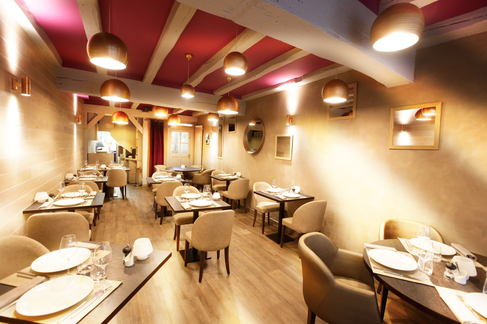
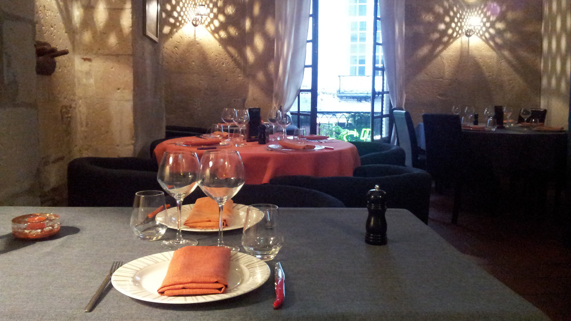
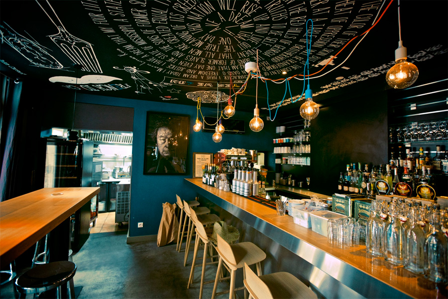
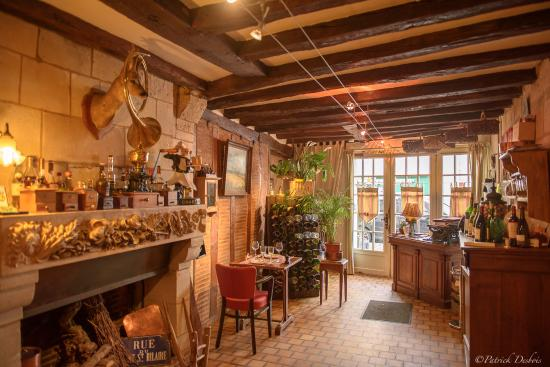
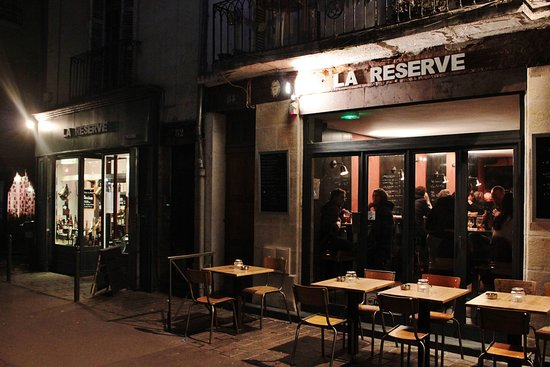
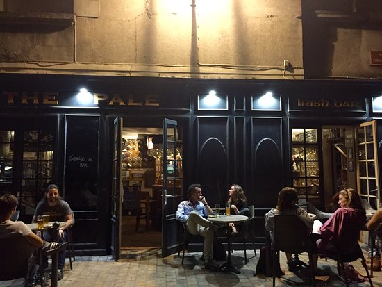

| L'Escapade |  | Lieux très charmant et acceuillant! Restaurant gastronomique qui a obtenu le titre de maître restaurateur en 2014. | 88 Rue Colbert
37000 Tours tel : 02 47 05 24 81 |
| L'Embellie |  | C’est au cœur de Tours, à deux pas de la place Plumereau, dans un cadre discret et élégant! Vous êtes ici au cœur d’un établissement où les pierres anciennes et les poutres dévoilées vous murmurent l’histoire de la vieille ville, sur un air de jazz. | 10 rue de la grosse Tour
37000 Tours tel : 09 54 61 64 43 |
| Le Café Marcel |  | Très bon accueil, des plats copieux et délicieux! Service et cadre au top. Restaurant,Bar convivial et chaleureux dans la galerie commerciale de l’heure tranquille : burgers, cocktails, brunch, bar à vins, salades, goûter, cafés créations. | 4 Place Plumereau
37000 Tours tel : 02 47 22 07 98 |
| Le Saint Honoré |  | L’accueil est chaleureux, la carte est agréable! Fraicheur des produits du terroir et régionale. A découvrir rapidement! | 7 Place des Petites Boucheries
37000 Tours tel : 02 47 61 93 82 |
| La Reserve |  | L'endroit est très sympa, les produits sont de qualités! Des planchettes variées pour une dégustation de nos produits locaux! | 84 rue Colbert
37000 Tours tel : 09 84 45 93 09 |
| The Pale |  | Un petit coin d’Irlande au cœur de la Touraine dans un parfait esprit de convivialité! Pour les amateurs de sport, c'est un lieux de retransmision sportive! | 18 Place Foire le Roi
37000 Tours tel : 02 47 64 80 56 |